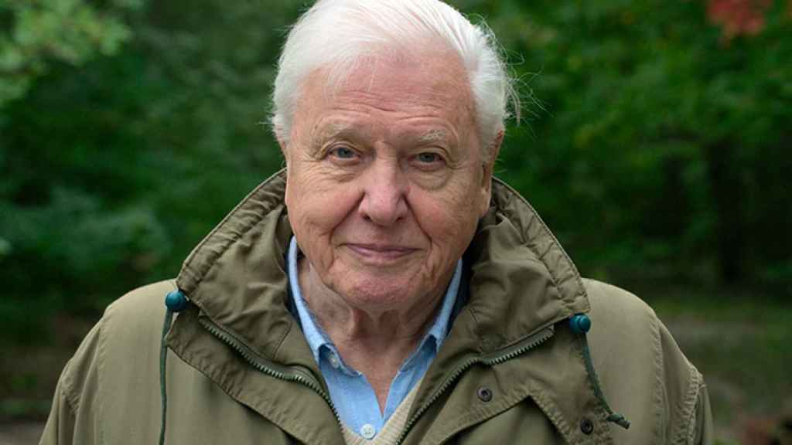
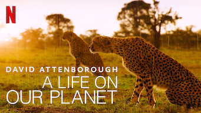
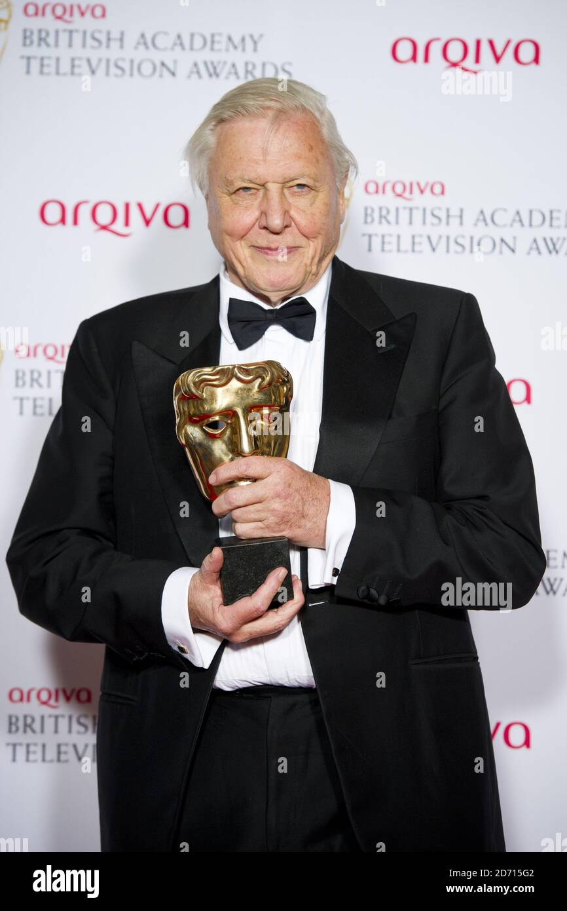

David Attenborough

¿Quién es?
David Frederick Attenborough es un científico británico, uno de los divulgadores naturalistas más conocidos de la televisión. Considerado uno de los pioneros en documentales sobre la naturaleza, ha escrito y presentado ocho series, e hizo posible que se vea prácticamente cualquier aspecto de la vida en la Tierra.Más información.
¿Dónde nació?
David Attemborough nació en Isleworth, Reino Unido
Documentales más vistos
- Historias de David Attenborough.
- En esta miniserie de tres capítulos Attenborough analiza en cada capítulo los cambios de los que ha visto en primera persona en el desarrollo de su trabajo en los tres campos que ha cubierto: La tecnología en la producción de documentales, la ciencia en la comprensión de las especies y el planeta y la conservación del medio ambiente.
Me parece muy interesante por que el mismo nos explica como ha vivido los cambios además de tener imágenes y explicar como eran y se hacían las cosas hace más de 50 años.
- Planeta helado.
- Attenborough nos lleva tanto al ártico como a la antártida en planeta helado revelándonos la belleza tanto del paisaje como de los animales que habitan en las zonas más frías de la tierra. Es una de la grandes series de sir David que creó controversia en los Estados Unidos pues el capítulo que muestra los efectos del cambio climático, sobre el hielo frágil, fue vetado por 10 cadenas de televisión por considerarlo polémico, como siempre los amigos de USA cuando no les gusta de lo que se habla prefieren eliminarlo no sea que la gente puede tomar conciencia. Es sin duda una extraordinaria serie que todo amante de la naturaleza no se puede perder.
- Life.
- Esta épica serie de diez capítulos fue tal vez la empresa más ambiciosa en esta lista: cubre toda la vida en el planeta y utilizando las últimas cámaras de alta velocidad (a 8.000 fotogramas por segundo) para capturar momentos nunca vistos anteriormente en película. Está lleno de momentos impresionantes y cuenta con algunas de las escenas más espectaculares y memorables grabadas en documentales de naturaleza.
- Attenborough y el huevo gigante.
- En este especial ve Sir David trazar la historia de un gigante, un huevo fosilizado que había estado guardando en su sótano durante 50 años, después de recogerlo durante el rodaje en Madagascar. El huevo de más de 30 centímetros es de la extinta ave elefante de Madagascar, una popular fuente de alimento para los isleños hace mil años; un huevo podría alimentar a una familia entera. Sir David nos adentra en el mundo de esta extraña y gigante ave y nos desvela las posibles causas de su extinción.
- Planeta tierra.
- La grabación de esta serie tomó cinco años y fue es programa de naturaleza de la BBC más caro que jamás se ha hecho. Pero en realiadad, valió la pena, traza la amplitud y variedad de los paisajes de la Tierra, desde los volcanes de Etiopía a las cuevas más profundas del mundo, desde el desierto de Gobi de Mongolia a las selvas tropicales de Nueva Guinea. Si no la has visto tómate un día entero y disfruta de todos y cada uno de los magníficos documentales de esta serie.
- Mamíferos.
- Esto es, la serie en la que Sir David dice "boo" a un perezoso, una de las escenas más recordadas en este tipo de documentales. Incluso después de dedicar cinco episodios de serie la vida en la Tierra (1979) a los mamíferos, esta serie analiza los mamíferos en sus 10 capítulos. Seamos realistas: los mamíferos son los animales que más gustan y cuando Attenborough se ve en la cara de un orangután de Borneo, vemos una pequeña parte de nuestro pasado.
- Planeta azul.
- La naturaleza nunca nos parecerá más extraña que lo hace en el planeta azul. Está lleno de extrañas criaturas ondulantes de las profundidades. Pero hay mucho que admirar en esta serie de 10 capítulos, desde el caminar cómico del pez mano a la belleza sobrenatural del calamar australiano que cambian de color durante su apareamiento nos adentramos en la fauna submarina para ver criaturas únicas y fascinantes que la mayoría de nosotros no conocemos.
- La vida privada de las plantas.
- Entre la variada fauna de estos documentales, es fácil olvidar que la flora pueden ser igual de emocionante. 21 años después de su realización, la vida privada de las plantas todavía se alinea junto a los mejores trabajos de Attenborough. Con su revolucionario fotografía de lapso de tiempo, filmada desde la perspectiva de las propias plantas, la serie mostró vides arrastrándose como seres vivos, que, por supuesto, que lo son pero en esta serie podemos realmente apreciarlo. Una excelente serie no sólo para los amantes de las plantas ya que nos ofrece una visión única de las plantas y de su vida como seres vivos que son.
- La vida de las aves.
- En un documental sobre la naturaleza de primer orden no sólo son importantes los efectos visuales. Porque la vida de las aves, el sonido fue primero: El equipo de grabación estaba decididos a no copiar un solo sonido, todas los cantes de las aves que escuche fueron grabados en el momento exacto en que se ve el ave crearlo. La serie es una hermosa síntesis perfecta, de imagen y sonido sobre unos animales sobre los que hay tantos documentales y que en esta serie se analizan en profundidad.
- La vida a sangre fría.
- Sir David nos adentra en el fascinante mundo de los reptiles y anfibios estudiando tanto su evolución como sus hábitos de comportamiento en la naturaleza. Es una serie imperdible para todos aquellos aficionados a los animales de sangre fría, animales que la mayoría de las personas no aprecian y temen pero que tienen una belleza extraordinaria además de cumplir una labor esencial en la naturaleza.

Un documental que me parece muy interesante es sobre cómo se desarrollaron los primeros animales en nuestro planeta.
Enlace al documental sobre los desarrollos de los animales en sus inicios.
Premios recibidos
Durante toda su carrera, David Attemborough ha recibido un gran número de premios, de los cuales los más recientes son:
- Primetime Creative Arts Emmy award for Outstanding narrator en 2020,2019 y 2018.
- Goodreads Choice Award en la Categoría Ciencia y Tecnología en 2020.
- Mejor Narración/Voice-Over en un Cortometraje en 2020.
- Premio Indira Gandhi en 2019.
- David Attenborough national television award - impact award en 2018
- Premio de Televisión de la Academia Británica al Mejor Programa Especializado Basado en Hechos en 2017,2014,2011
- David Attenborough peabody personal award en 2015

Cualidades de David
| 1 |
Éxito |
3 |
Líder |
| 2 |
Visionario |
4 |
Innovador |
Enlace a página de los deberes